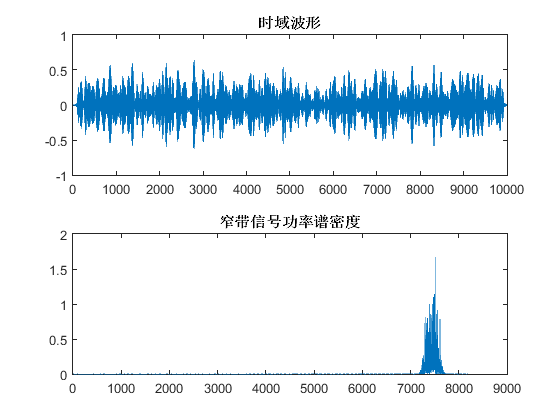
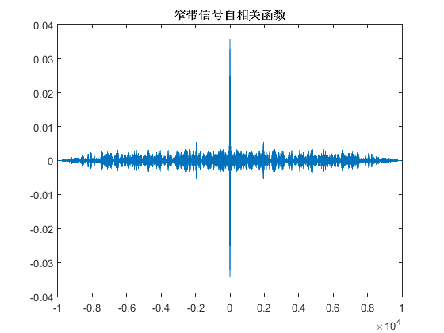
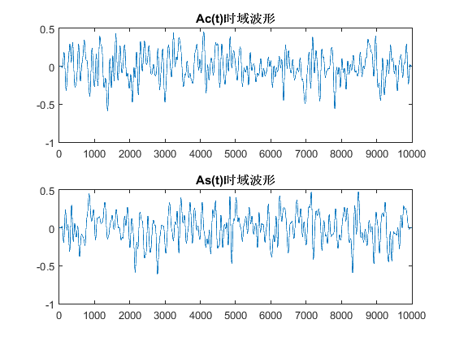
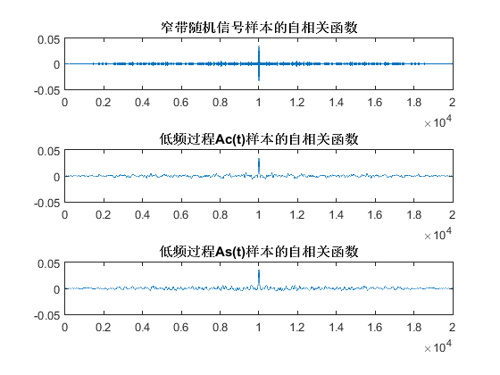
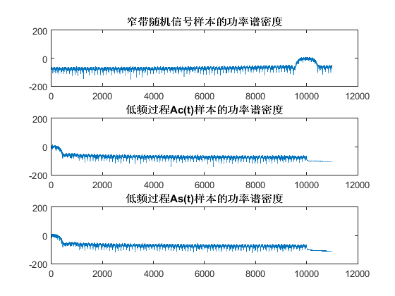

实验III：通信信号统计特性分析、仿真实现及应用
之二： 窄带信号的生成和Rice表达式正余弦分量特性 参照例 4.7-X 2016.11.4
Contents
准备环境
clear all close all clc
生成窄带随机信号
N=10000;f0=10000;deltf=500;fs=22000;M=200; %调用参数设置 X=Narrowbandsignal(N,f0,deltf,fs,M); %调用产生窄带随机信号的函数
展示窄带数据
时域
figure, subplot(2,1,1);plot(X); title('时域波形') % 功率谱 subplot(2,1,2);plot( periodogram( X)); title('窄带信号功率谱密度')
%自相关函数 [Rx,lag]=xcorr(X,'biased'); %窄带随机信号样本的自相关函数 figure,plot(lag,Rx); title('窄带信号自相关函数')
取得Ac(t)、As(t)分量
[Ac, As]=Lowfsignal(X,f0,fs); %调用产生Ac(t)、As(t)的函数
展示Ac(t)、As(t)分量时域波形
Ac(t)
figure, subplot(2,1,1);plot(Ac); title('Ac(t)时域波形') % As(t) subplot(2,1,2);plot(As); title('As(t)时域波形')
展示窄带、Ac(t)、As(t)分量自相关函数
Rac=xcorr(Ac,'biased'); %低频过程Ac(t)样本的自相关函数 Ras=xcorr(As,'biased'); %低频过程As(t)样本的自相关函数 Racw=abs(fft(Rac)); %低频过程Ac(t)样本的功率谱密度 Rasw=abs(fft(Ras)); %低频过程As(t)样本的功率谱密度 Rxw=abs(fft(Rx)); %窄带随机信号样本的功率谱密度 N1=2*N-1; f=fs/N1:fs/N1:fs/2; %频率轴的变换 % 自相关函数 figure,subplot(3,1,1);plot(Rx); title('窄带随机信号样本的自相关函数'); subplot(3,1,2);plot(Rac); title('低频过程Ac(t)样本的自相关函数'); subplot(3,1,3);plot(Ras); title('低频过程As(t)样本的自相关函数');
展示窄带、Ac(t)、As(t)分量功率谱密度
%功率谱密度 figure,subplot(3,1,1);plot(f,10*log10(Rxw(1:(N1-1)/2)+eps)); title('窄带随机信号样本的功率谱密度'); subplot(3,1,2);plot(f,10*log10(Racw(1:(N1-1)/2)+eps)); title('低频过程Ac(t)样本的功率谱密度'); subplot(3,1,3);plot(f,10*log10(Rasw(1:(N1-1)/2)+eps)); title('低频过程As(t)样本的功率谱密度');